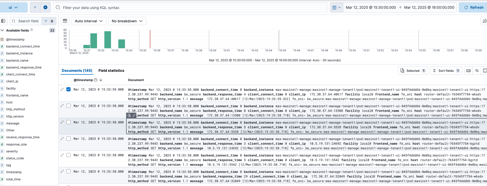

Logging Collection
Maximo-CPI can be used as a rsyslog server. The default service port is 10514.
Note: Although rsyslog supports multiple input/output models, only the omelasticsearch module is available inside the container.
It offers a few scripts that enable/disable ingressor log and manage pod log:
ingresslog-rsyslog.shto forward haproxy access log to rsyslog server.ingresslog-disable.shto disable the log forwarding.ingresslog-container.shto keep the log in the haproxy container only.manage-lrquery-enable.sh <manage namespace name>to forward the long running query.manage-lrquery-disable.sh <manage namespace name>to disable the long running query forwarding.
Forward OpenShift Ingressor Log to Maximo-CPI
- Openshift uses haproxy as the ingressor controller.
- Use the command
ingresslog-rsyslog.shto forward haproxy access log to Maximo-CPI pod. Use the commandingresslog-disable.shto disable the log forwarding. - Modify
/etc/rsyslog.conffor filtering, log location or redirection if needed. Code Snippet for the current setting:
# Provides UDP syslog reception
module(load="imudp")
input(type="imudp" port="10514")
# Provides TCP syslog reception
module(load="imtcp")
input(type="imtcp" port="10514")
# Send local log messages to a remote server
# module(load="omfwd")
# *.* @logserver.example.com:514 # UDP forwarding
# *.* @@logserver.example.com:514 # TCP forwarding
#### GLOBAL DIRECTIVES ####
# Where to place auxiliary files
global(workDirectory="/var/log/rsyslog")
# haproxy access log
$template AccessLogs,"/var/log/rsyslog/haproxy-access.log"
$template msgOnly, "%msg%\n"
# manage ui access log
if ($hostname contains "router-default-" and $msg contains "masinst1-tenant1-ui") then {
action(type="omfile" file="/var/log/rsyslog/ui-access.log" template="msgOnly")
}
# manage long runing query log
if ($syslogtag contains "manage-lrquery") then {
action(type="omfile" file="/var/log/rsyslog/manage-lrquery.log" template="msgOnly")
}
# catch the rest
*.* ?AccessLogs
& ~
Forward Maximo Manage Long Running Query to Maximo-CPI
- Maximo Manage app will record any query over 2 seconds into the log. Use the command
manage-lrquery-enable.sh <manage namespace name>to forward the long running query to Maximo-CPI pod. Usemanage-lrquery-disable.sh <manage namespace name>to disable the log forwarding.
Useful commands to filter the local log
Sample message in the log looks like below:
10.5.19.131:5542 [12/Mar/2025:19:33:58.710] fe_sni~ be_secure:mas-masinst1-manage:masinst1-manage-tenant1/pod:masinst1-tenant1-ui-845f4ddd66-8m8bq:masinst1-tenant1-ui:https:172.30.237.99:9443 0/0/5/6/11 200 2531 - - --VN 35/13/1/1/0 0/0 "GET /maximo/webclient/javascript/dojo-20250311-1610/dojo/resources/dojo.css HTTP/1.1"
- list the urls over 2 seconds from ui-access.log:
awk '{split($0, al, " "); split(al[5], rt, "/"); if (rt[5] > 2000) print $0}' ui-access.log - list the urls whose status code not equal 200 or 302:
awk '{split($0, al, " "); if (al[6] != 200 && al[6] != 302) print $0}' ui-access.log - list the urls whose resposne size over 2kb:
awk '{split($0, al, " "); if (al[7] > 2000) print $0}' ui-access.log
Forward the log from Rsyslog to Elasticsearch
- Modify
/etc/rsyslog.confto forward the log to Elasticsearch. Code Snippet:
template(name="plain-syslog"
type="list"
option.json="on") {
constant(value="{")
constant(value="\"@timestamp\":\"") property(name="timereported" dateFormat="rfc3339")
constant(value="\",\"host\":\"") property(name="hostname")
constant(value="\",\"severity\":\"") property(name="syslogseverity-text")
constant(value="\",\"facility\":\"") property(name="syslogfacility-text")
constant(value="\",\"tag\":\"") property(name="syslogtag")
constant(value="\",\"message\":\"") property(name="msg")
constant(value="\"}")
}
# manage ui access log
if ($hostname contains "router-default-" and $msg contains "masinst1-tenant1-ui") then {
action(type="omfile" file="/var/log/rsyslog/ui-access.log" template="msgOnly")
action(type="omelasticsearch"
server="mas-es-internal-http.eck.svc.cluster.local:9200"
template="plain-syslog"
searchIndex="ui-index"
searchType=""
bulkmode="on"
queue.type="linkedlist"
queue.size="5000"
queue.dequeuebatchsize="300"
usehttps="on"
allowunsignedcerts="on"
skipverifyhost="on"
uid="<elastic username>"
pwd="<elastic password>"
action.resumeRetryCount="3"
errorfile="/var/log/rsyslog/el-error.log"
)
}
- restart the rsyslogd service by
supervisorctl restart rsyslogd. - Create a pipeline on Elasticsearch to break down the message field if needed. Below are sample messages from Elasticsearch:
